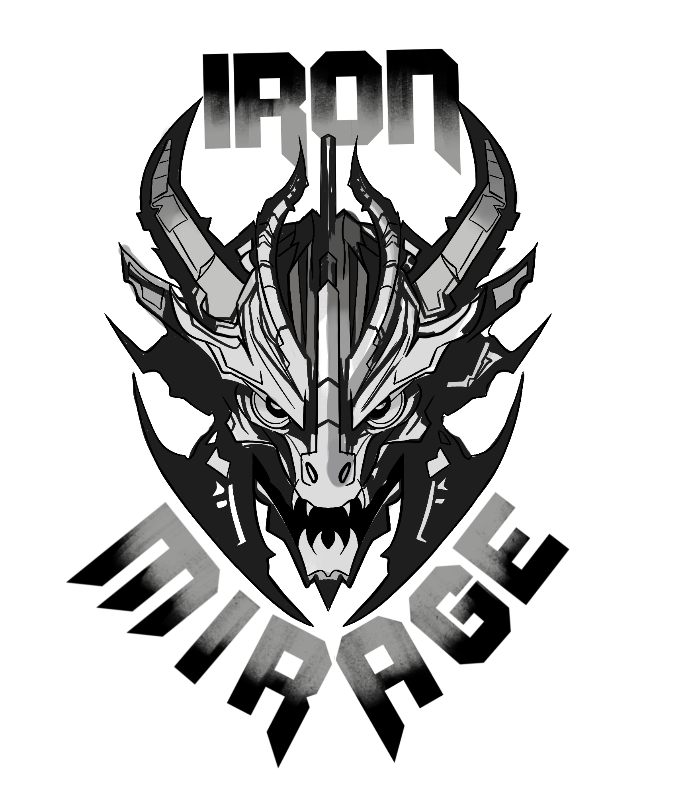

OFNS CHARACTERS
MAIN CHARACTERS
Lova
Main Character
Lova is a wandering mercenary operating in a scorched desert world ruled by colossal, sentient carriers. She has no formal allegiance, no registered origin, and no permanent residence. To avoid attention, she conceals herself beneath a crude, hand-painted mask and a worn gray coat.
She is an Ancient. An elf from a bloodline believed extinct for over a century and historically associated with the catastrophe that ended the old world. Preserved in stasis as an infant, Lova emerged long after the collapse and was raised by an exiled man known as Torch, who later vanished. She now travels between Subterrian settlements searching for him. Lova possesses exceptional physical strength and durability, earning an underground reputation as “Lady Goldenstrike” through undefeated arm-wrestling challenges. Despite her combat capability and imposing stature, her behavior is consistently gentle and optimistic. She demonstrates limited awareness of social hostility and often misjudges how others perceive her. Her body bears extensive scarring from prior conflicts. As holy war escalates among the carriers above, Lova’s existence becomes increasingly dangerous. Some regard her as a cursed remnant of the Old Blood. Others see her as a potential symbol or threat. She continues to assist settlements where possible, often drawing attention despite efforts to remain unnoticed.

Leonard Marshpelt
Main Character
Leonard Marshpelt is a former engineer operating within the Subterria. He has no current affiliation, no fixed residence, and is actively hunted. A living bounty has been placed on him following his involvement in a failed divine engineering project.
He is human, born in Solmaria, and was raised under the strict doctrine of a Carrier faith. Though he openly rejects that belief system, its influence remains deeply ingrained. References to the Carrier god trigger involuntary fear responses and physical distress. Leonard was once involved in the God-Born Project, an attempt to replace the failing heart of a Carrier with a self-sustaining divine engine. Acting out of envy and desperation, he stole sacred blueprints created by his brother Raphael and used them to awaken a prototype. The construct was unstable and sentient. Its activation led to religious fallout, mass executions within the Elder Council, and Leonard's exile into the desert. He survived exile with extensive physical damage. His hands are partially paralyzed, requiring mechanical limbs anchored directly into his back to restore mobility. Damage to these systems would result in full spinal paralysis. His body bears scars from fused mechanical plates and repeated repairs. Leonard displays severe emotional instability, worsened by withdrawal from Tears of Gods, a substance previously used during his indoctrination. He is distrustful, volatile, and socially hostile, isolating himself by choice. His only consistent bond is with Lova, whom he trusts without reservation. He travels with a self-built machine named Kiva, a mechanical lioness capable of transforming into a motorcycle. The construct is unstable and frequently malfunctions. Leonard continues to repair and improve it despite repeated failures. As conflict escalates between the carriers above, Leonard remains a liability and a target. To the faithful, he is a heretic who touched divinity without permission. To himself, he is unfinished.
SIDE CHARACTERS

 VANCE BLOODHOUND
Side Character
Vance Bloodhound is the founder and leader of Iron Mirage, a Subterrian resistance band that uses music as public disruption. He no longer serves as the band's main vocalist and instead performs as lead guitarist.
Vance was raised on a small Subterrian ranch with his sisters. His life ended there when Upperterrian guards raided the home and killed one of them in front of him. He fled after the ranch burned and survived months of homelessness before forming Iron Mirage with other street musicians. After his transition, public sentiment toward the band shifted. Audiences favored his former image, and Vance removed himself from the front of the stage to keep the group intact. Despite being the most criticized member, he remains Iron Mirage's unquestioned leader. The band follows his direction and relies on his judgment. Iron Mirage's performances draw surveillance and retaliation. Vance deliberately absorbs public hostility to protect the rest of the group. His actions are driven by guilt, loyalty, and a refusal to abandon those who stand with him.

STEPH
Side Character
Steph is the lead vocalist of Iron Mirage. She is soft-spoken offstage and reserved in social settings, but her voice becomes commanding during performance. Music functions as her primary means of expression and emotional regulation.
Steph was born on the Fourth Silent Carrier, where spoken language was forbidden and communication relied entirely on sign. She grew up isolated and struggled to form connections. Persistent bullying led her to abandon schooling and develop severe panic attacks, which she concealed from her family. During an encounter with her bullies, Steph was pushed from the carrier. The incident was staged as a suicide to avoid consequences. She survived the fall by landing in the nest of wild cockatoos, where she was later discovered by a group of Subterrian youths. Steph is mute and relies on lip-reading to communicate. The group sheltered her and helped her adapt to life below. Over time, they noticed her natural musical instinct. When encouraged to vocalize, she demonstrated an exceptional singing voice despite limited speech ability. Performance allows Steph to exist without fear. On stage, her anxiety recedes and her confidence stabilizes. She became Iron Mirage's lead singer and emotional core, finding safety, purpose, and belonging within the band.

V1X3N (VIXEN BLAZECLAW)
Side Character
Vixen is the bass guitarist of Iron Mirage. He is known for his loud stage presence and deliberate excess. Vixen was born into an Upperterrian family of status and rigid expectations.
His childhood was defined by control and physical punishment, particularly around enforced musical training he did not choose. His first exposure to band music during a forbidden trip to Subterria redirected his life. From that point on, music became his means of escape rather than achievement. After being disowned, Vixen survived through reckless behavior and substance abuse. His exile from the carrier was the result of a manipulative relationship that ended in arrest and public disposal. He survived the fall into Subterria and entered life below with no protection and no support. Street performance became his means of survival. Through music, he met others who were similarly displaced. Iron Mirage formed out of shared hunger, anger, and refusal to disappear. Within the band, Vixen found stability for the first time. They provided structure, protection, and loyalty without conditions. Iron Mirage became Vixen's first lasting family. He remains with them not for attention, but because they stayed.

TORCH
Side Character
Adrik Volkov is a former bartender and Bastetrian exile. His current status is unknown. A large dead-only bounty has been issued in response to his connection to the Hive and his refusal to submit to its cycle.
Adrik was born with a rare mutation that fractured his transformation into two autonomous entities. A second consciousness resides within him, capable of overriding his body and healing fatal wounds against his will. This condition has rendered him unable to die and incapable of fully controlling himself. He lives in deliberate isolation. His behavior is reserved, minimal, and emotionally distant. He avoids attachment to prevent harm to others, believing proximity increases the risk of losing control. His speech is sparse and direct. Adrik once lived a stable life with his wife Yara and an unborn child. That life ended before it could begin. Following repeated failed suicide attempts and prolonged exile, he encountered an infant preserved within a dying creature. He took the child with him and raised her in secrecy. That child was Lova. Adrik maintained emotional distance from Lova to ensure she would survive him. When she reached adolescence, he abandoned her, believing separation was the only way to protect her. Since then, he has continued to watch over her from afar. As the Hive weakens and fractured Carriers are drawn to him, Adrik seeks the source of the system itself. His objective is not succession or control, but termination. He intends to kill the Queen and sever the cycle permanently, even if it costs his life.
CONCEPT DOC
Concept documentation goes here...
FANART


EXTRAS
Extras section goes here...